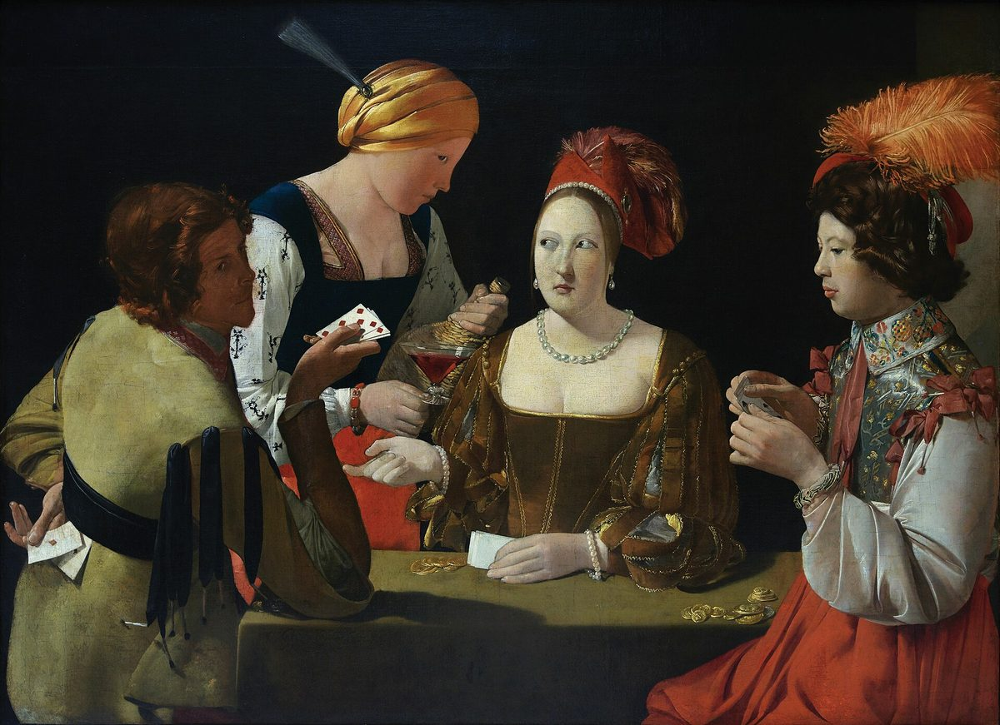

Hidden in the Frame · Louvre Museum, Paris
The Cheat with the Ace of Diamonds
Georges de La Tour · c. 1636–38 · Oil on canvas, 106 × 146 cm · Room 912 (Sully wing, level 2)

The story
A rich young man is playing cards – and doesn't notice that the other three are working together. After his death Georges de La Tour was forgotten for almost three centuries and only rediscovered in the 20th century. The Louvre bought this painting in 1972. It shows the three great temptations of his time: gambling, wine and seduction.
Details to look for
- On the left, behind his back, the cheat pulls an ace of diamonds from his belt. Only we can see it – the painter makes us accomplices.
- The woman in the middle casts a sidelong glance to the left, and her hand gives a signal. Watch the eyes: all the glances run in a circle, only the young man looks at his cards.
- The maid brings a glass of wine. Wine distracts and makes people careless – she is part of the team.
- On the right, the young man, splendidly dressed, with gold coins in front of him. He is the victim: innocent, rich and clueless.
What it says
A crime story in a single picture: you have to follow the glances to work out who is cheating whom.
Open the full guide – zoom, audio guide, German & Japanese →